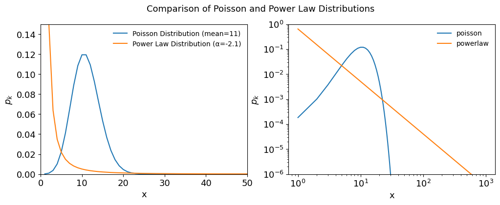
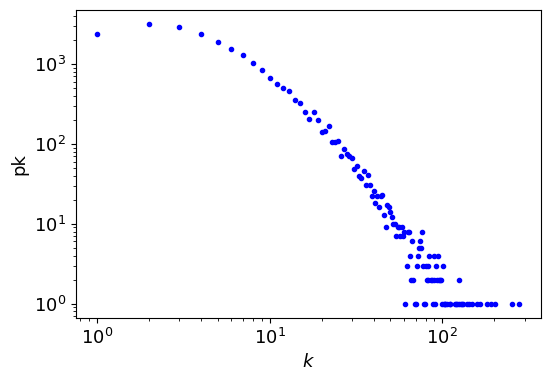
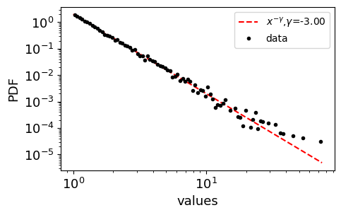
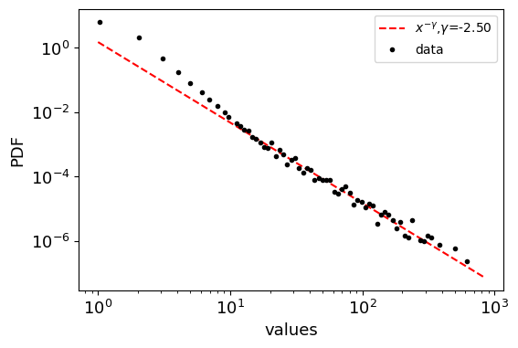
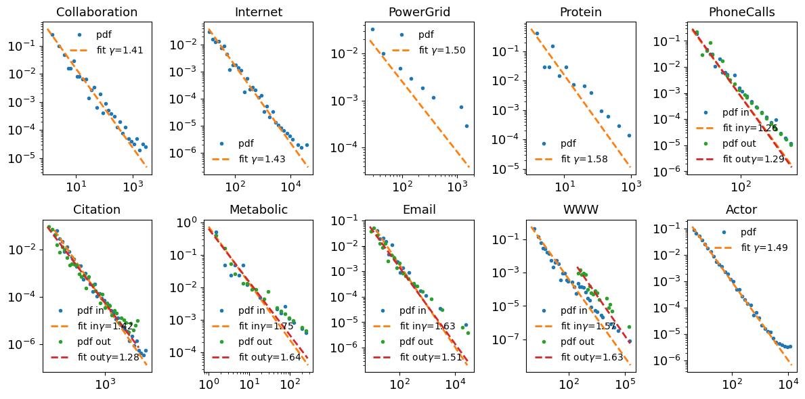
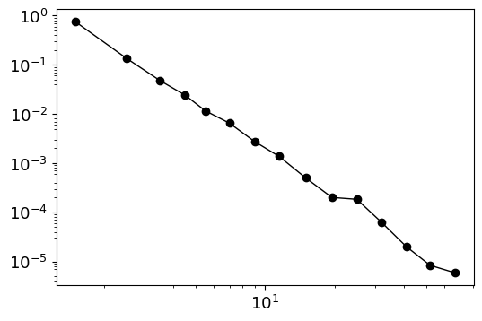
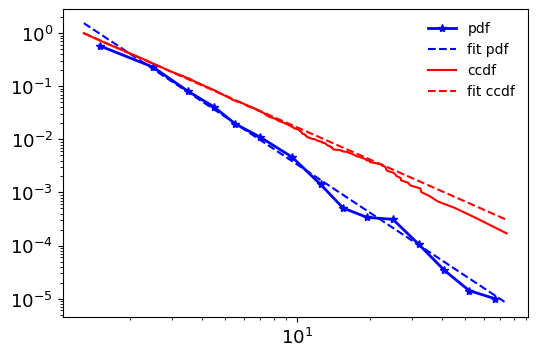

Chapter 4¶
THE SCALE-FREE PROPERTY¶
Code by : Abolfazl Ziaeemehr

[11]:
# uncomment and run this line to install the package on colab
# !pip install "git+https://github.com/Ziaeemehr/netsci.git" -q
[1]:
import numpy as np
import matplotlib.pyplot as plt
from netsci.utils import generate_power_law_dist, generate_power_law_dist_bounded
[2]:
LABELSIZE = 13
plt.rc('axes', labelsize=LABELSIZE)
plt.rc('axes', titlesize=LABELSIZE)
plt.rc('figure', titlesize=LABELSIZE)
plt.rc('legend', fontsize=LABELSIZE)
plt.rc('xtick', labelsize=LABELSIZE)
plt.rc('ytick', labelsize=LABELSIZE)
# set legend font size
plt.rc('legend', fontsize=10)
Figure 4.4, Comparing Poisson and Powe-law Distributions¶
[3]:
import numpy as np
import matplotlib.pyplot as plt
from scipy.stats import poisson
# Parameters
mean_poisson = 11
alpha_power_law = 2.1
x_values = np.arange(1, 1000)
# Poisson Distribution
poisson_pmf = poisson.pmf(x_values, mean_poisson)
# Power Law Distribution
power_law_pdf = x_values ** (-alpha_power_law)
# Normalize power-law PDF to make it a valid probability distribution
power_law_pdf /= np.sum(power_law_pdf)
# Plotting
fig, ax = plt.subplots(1,2, figsize=(12,4))
ax[0].plot(x_values, poisson_pmf, label='Poisson Distribution (mean=11)')
ax[0].plot(x_values, power_law_pdf, label='Power Law Distribution (α=-2.1)')
ax[0].set_xlim([0,50])
ax[0].set_ylim([0,0.15])
ax[0].set_xlabel('x')
ax[0].set_ylabel(r'$p_k$')
fig.suptitle('Comparison of Poisson and Power Law Distributions')
ax[0].legend(frameon=False)
ax[1].loglog(x_values, poisson_pmf, label="poisson")
ax[1].loglog(x_values, power_law_pdf, label="powerlaw")
ax[1].set_ylim([1e-6, 1])
ax[1].set_xlabel('x')
ax[1].set_ylabel(r'$p_k$')
ax[1].legend(frameon=False);

load sample graphs of the book¶
[4]:
from netsci.utils import list_sample_graphs, load_sample_graph
from netsci.analysis import graph_info
# on colab:
nets = ['Collaboration', 'Internet', 'PowerGrid', 'Protein', 'PhoneCalls', 'Citation', 'Metabolic', 'Email', 'WWW', 'Actor']
# on local:
nets = list(list_sample_graphs().keys())
print(nets)
['Collaboration', 'Internet', 'PowerGrid', 'Protein', 'PhoneCalls', 'Citation', 'Metabolic', 'Email', 'WWW', 'Actor']
On Google Colab only¶
[ ]:
from google.colab import drive
import os
# URL of the zip file to be downloaded
url = "https://networksciencebook.com/translations/en/resources/networks.zip"
# Mount Google Drive
drive.mount('/content/drive')
# Create the 'network_science' directory in MyDrive if it doesn't exist
network_science_dir = '/content/drive/MyDrive/network_science'
os.makedirs(network_science_dir, exist_ok=True)
# empty the directory
!rm -rf /content/drive/MyDrive/network_science/*
# Change directory to 'network_science'
os.chdir(network_science_dir)
# Download the zip file to the 'network_science' directory
!wget $url -O networks.zip
# Unzip the downloaded file in the 'network_science' directory
!unzip networks.zip
json_file = "https://raw.githubusercontent.com/Ziaeemehr/netsci/main/netsci/datasets/sample_graphs.json"
# download json file
!wget $json_file -O sample_graphs.json
[5]:
import powerlaw
from collections import Counter
from scipy.stats import poisson
G_collab = load_sample_graph("Collaboration") # on colab: add colab_path=network_science_dir
graph_info(G_collab, quick=True)
degrees = list(dict(G_collab.degree()).values())
degree_count = Counter(degrees)
k, pk = zip(*degree_count.items())
plt.figure(figsize=(6,4))
plt.loglog(k, pk, 'b.', label=r"$k$")
plt.xlabel(r"$k$")
plt.ylabel("pk");
fit = powerlaw.Fit(pk) # xmax=80
print(f" α = {fit.power_law.alpha:6.3f}, σ = ± {fit.power_law.sigma:6.3f}") # the exponent
Graph information
Directed : False
Number of nodes : 23133
Number of edges : 93439
Average degree : 8.0784
Connectivity : disconnected
Calculating best minimal value for power law fit
α = 1.410, σ = ± 0.037

Generate the powerlaw distribution (bounded)¶
[6]:
generate_power_law_dist?
Signature: generate_power_law_dist(N: int, a: float, xmin: float)
Docstring:
generate power law random numbers p(k) ~ x^(-a) for a>1
Parameters
-----------
N:
is the number of random numbers
a:
is the exponent
xmin:
is the minimum value of distribution
Returns
-----------
value: np.array
powerlaw distribution
File: ~/git/workshops/network_science/netsci/netsci/utils.py
Type: function
[7]:
generate_power_law_dist_bounded?
Signature:
generate_power_law_dist_bounded(
N: int,
a: float,
xmin: float,
xmax: float,
seed: int = -1,
)
Docstring:
Generate a power law distribution of floats p(k) ~ x^(-a) for a>1
which is bounded by xmin and xmax
parameters :
N: int
number of samples in powerlaw distribution (pwd).
a:
exponent of the pwd.
xmin:
min value in pwd.
xmax:
max value in pwd.
File: ~/git/workshops/network_science/netsci/netsci/utils.py
Type: function
plotting the powerlaw distributions
[8]:
def plot_distribution(vrs, N, a, xmin, ax, labelsize=10):
# plotting the PDF estimated from variates
bin_min, bin_max = np.min(vrs), np.max(vrs)
bins = 10**(np.linspace(np.log10(bin_min), np.log10(bin_max), 100))
counts, edges = np.histogram(vrs, bins, density=True)
centers = (edges[1:] + edges[:-1])/2.
# plotting the expected PDF
xs = np.linspace(bin_min, bin_max, N)
expected_pdf = [(a-1) * xmin**(a-1) * x**(-a) for x in xs] # according to eq. 4.12 network science barabasi 2016
ax.loglog(xs, expected_pdf, color='red', ls='--', label=r"$x^{-\gamma}$,"+ r"${\gamma}$="+f"{-a:.2f}")
ax.loglog(centers, counts, 'k.', label='data')
ax.legend(fontsize=labelsize)
ax.set_xlabel("values")
ax.set_ylabel("PDF")
[9]:
np.random.seed(2)
N = 10000
a = 3.0
xmin = 1
xmax = 100
fig, ax = plt.subplots(1, figsize=(5,3))
x = generate_power_law_dist_bounded(N, a, xmin, xmax)
print (np.min(x), np.max(x))
plot_distribution(x, N, a, xmin, ax)
1.000035809608483 74.39513593875918

[10]:
# find the exponent by fitting a power law by powerlaw package
import powerlaw
fit = powerlaw.Fit(x) # xmax=50 we can constrain the max value for fitting
print(f"{fit.power_law.alpha=}") # the exponent
print(f"{fit.power_law.sigma=}") # standard error
Calculating best minimal value for power law fit
fit.power_law.alpha=np.float64(2.995340848455978)
fit.power_law.sigma=np.float64(0.02600579145725683)
Generate descereted power law distribution
[11]:
from netsci.utils import generate_power_law_discrete
# Example usage
gamma = 2.5 # Power-law exponent
k_min = 1 # Minimum value of k
k_max = 1000 # Maximum value of k
size = 100000 # Number of samples
samples = generate_power_law_discrete(size, gamma, k_min, k_max, seed=1)
fig, ax = plt.subplots(1, figsize=(6,4))
plot_distribution(samples, size, gamma, k_min, ax)

Table 4.1¶
loading with igraph
[12]:
import os
import igraph as ig
from tqdm import tqdm
from netsci.utils import list_sample_graphs
from netsci.utils import get_sample_dataset_path
from netsci.utils import download_sample_dataset
from netsci.utils import load_sample_graphi
# download_sample_dataset()
sample_graph_names = list(list_sample_graphs().keys()) # not on colab
sample_graph_names
[12]:
['Collaboration',
'Internet',
'PowerGrid',
'Protein',
'PhoneCalls',
'Citation',
'Metabolic',
'Email',
'WWW',
'Actor']
[31]:
# select the files in the path ending with .edgelist.txt
graphs = {}
for name in tqdm(sample_graph_names, desc="processing graphs"):
G = load_sample_graphi(name) # on colab: add colab_path=network_science_dir
directed = G.is_directed()
if directed:
in_degrees = G.degree(mode="in")
out_degrees = G.degree(mode="out")
in_degree_count = Counter(in_degrees)
out_degree_count = Counter(out_degrees)
in_k, in_pk = zip(*in_degree_count.items())
out_k, out_pk = zip(*out_degree_count.items())
graphs[name]={}
graphs[name]['in_k']=in_k
graphs[name]['in_pk']=in_pk
graphs[name]['out_k']=out_k
graphs[name]['out_pk']=out_pk
graphs[name]['directed']=True
else:
degrees = G.degree()
degree_count = Counter(degrees)
k, pk = zip(*degree_count.items())
graphs[name]={}
graphs[name]['k']=k
graphs[name]['pk']=pk
graphs[name]['directed']=False
processing graphs: 100%|██████████| 10/10 [00:40<00:00, 4.05s/it]
[35]:
def fit_powerlaw(k, pk, ax, label=None, label_inout=""):
fit = powerlaw.Fit(pk)
alpha = fit.power_law.alpha
sigma = fit.power_law.sigma
fit.plot_pdf(lw=2, ax=ax, marker='.', label='pdf ' + label_inout, ls='')
fit.power_law.plot_pdf(lw=2, ax=ax, ls='--', label='fit ' + label_inout+ f"$\gamma$={alpha:.2f}" )
# ax.text(0.1, 0.1, f"α = {alpha:.2f}, σ = ± {sigma:.2f}", transform=ax.transAxes)
ax.set_title(name)
ax.legend(frameon=False)
return alpha, sigma
fig, ax = plt.subplots(2, 5, figsize=(12, 6))
ax = ax.ravel()
counter = 0
alpha_list = {}
for name, data in graphs.items():
if data['directed']:
alpha_in, sigma_in = fit_powerlaw(data['in_k'], data['in_pk'], ax[counter], label=name, label_inout="in")
alpha_out, sigma_out = fit_powerlaw(data['out_k'], data['out_pk'], ax[counter], label=name, label_inout="out")
else:
alpha, sigma = fit_powerlaw(data['k'], data['pk'], ax[counter], label=name)
alpha_list[name] = (alpha, sigma)
counter += 1
plt.tight_layout();
# ax.legend(frameon=False);
Calculating best minimal value for power law fit
Calculating best minimal value for power law fit
Calculating best minimal value for power law fit
Calculating best minimal value for power law fit
Calculating best minimal value for power law fit
Calculating best minimal value for power law fit
Calculating best minimal value for power law fit
Calculating best minimal value for power law fit
Calculating best minimal value for power law fit
Calculating best minimal value for power law fit
Calculating best minimal value for power law fit
Calculating best minimal value for power law fit
Calculating best minimal value for power law fit
Calculating best minimal value for power law fit
Calculating best minimal value for power law fit
xmin progress: 99%

[ ]:
# np.mean(graphs['www']['k']), np.mean(graphs['www']['pk'])
np.mean(graphs['collaboration']['k']), np.mean(graphs['collaboration']['pk'])
(np.float64(68.5327868852459), np.float64(189.61475409836066))
Powerlaw package¶
Alstott, J., Bullmore, E. and Plenz, D., 2014. powerlaw: a Python package for analysis of heavy-tailed distributions. PloS one, 9(1), p.e85777.
probability density function (PDF),
cumulative distribution function (CDF)
complementary cumulative distribution (CCDF)
[ ]:
import powerlaw
fig, ax = plt.subplots(1, figsize=(6,4))
fit = powerlaw.Fit(x) # xmax=50
print(f"{fit.power_law.alpha=}")
print(f"{fit.power_law.sigma=}")
print("-"*70)
print(fit.distribution_compare("power_law", "exponential"))
powerlaw.plot_pdf(x, linear_bins=0, color='k', marker='o', lw=1, ax=ax);
Calculating best minimal value for power law fit
fit.power_law.alpha=2.995340848455978
fit.power_law.sigma=0.02600579145725683
----------------------------------------------------------------------
(894.9727455051284, 5.263968413468816e-22)

[ ]:
fig, ax = plt.subplots(1, figsize=(6,4))
fit.plot_pdf(c='b', lw=2, marker="*", label='pdf', ax=ax)
fit.power_law.plot_pdf(c='b', ax=ax, ls='--', label='fit pdf')
fit.plot_ccdf(c='r', ax=ax, ls="-", label='ccdf')
fit.power_law.plot_ccdf(c='r', ax=ax, ls='--', label='fit ccdf')
ax.legend(frameon=False);

[ ]: